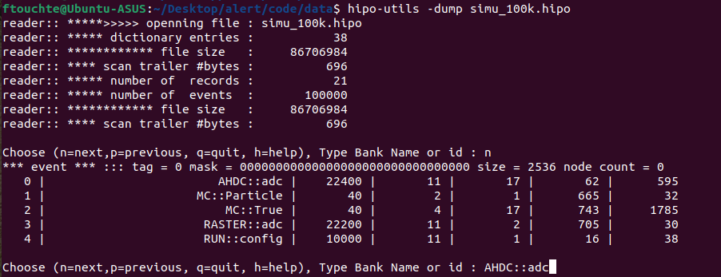
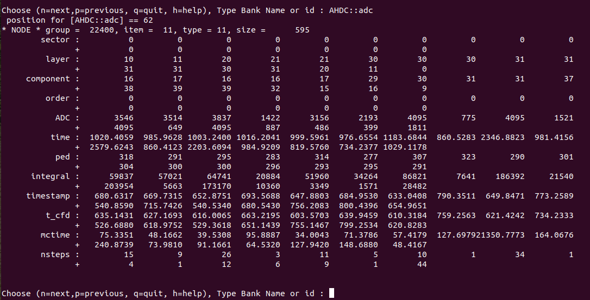

Run my code
At this step, everything is setup. Go in the directory where the geometry of the ALERT detector has been defined (yourpathto/gemc/detectors/clas12/alert)
Example of run :
/yourpathto/gemc/source/gemc alert.gcard -OUTPUT='hipo, ten_events.hipo' -N=10 -USE_GUI=0
Explanation :
-
/yourpathto/gemc/source/gemc is the executable that has been generated after compiling the gemc source code (
scons -j4) -
alert.gacrd is the configuration file that contains the geometry of the ALERT detector. It also allows to define the kind of particle to be generated, their initial position and momentum coordinates...
-
-OUTPUT='hipo, ten_events.hipo' sets the name of the output file. In this case, ten_events.hipo can be replace by myfilename.hipo.
-
-N=10 sets the number of events to be generated.
-
-USE_GUI=0 when this option is set to 1, a user interface appears.
Analysis
To view the content of the file on the ifarm, use hipo-utils
hipo-utils -dump ten-events.hipo
N.B : This command line is already available on the ifarm. To use it on a local computer, follow the instructions of HIPO Utilities JAVA.
Tips : In your equivalent .bashrc file, define this alias
alias hipo-utils="/yourpathto/bin/hipoutils.sh"
 
To go further, visit CLAS12 Software Center / Analysis